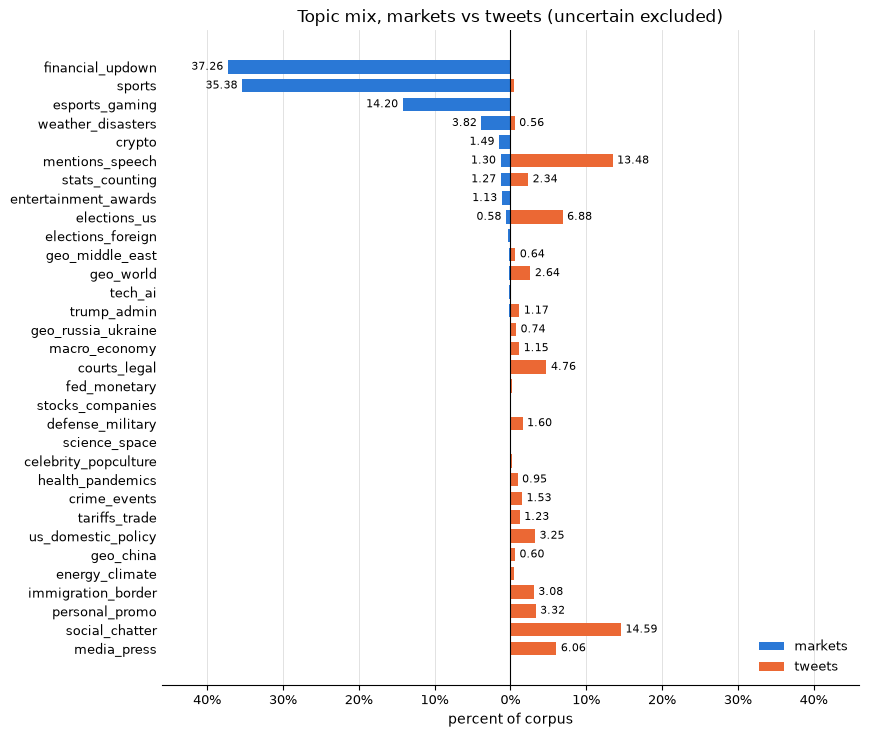

Topic labelling
This section outlines the ML pipeline used to label Donald Trump's posts and the Polymarket markets with topic categories. As we were working with an extremely large dataset, manual labelling was not feasible. After first attempting some natural language processing methods with poor results, we decided on using an LLM embedding pipeline to assign semantic topics to our data.
Embedding
Embedding is the process of mapping a string to a point in n-dimensional space, where the "closeness" of that point to another embedded string in the space corresponds to some semantic similarity. The similarity measure used for this project was cosine similarity. As the embedded vectors are length normalised, cosine similarity can be calculated simply with dot products.
The embedding model used for this project was Qwen3-Embedding. It is an open-weights transformer-based large language model specifically developed for text embedding tasks. It consistently ranks as close to state of the art in text embedding. The 8B parameter model was used for the tweets, while the 4B parameter model was used for the markets. The smaller model was chosen for the markets to speed up embedding due to the large number of markets.
Hardware
The RUB Chair for Computer Security was kind enough to lend us access to a high-powered server we used for the topic assignment. cupertino is an Apple Mac Pro Rack, featuring the M2 Ultra SoC with 192GB of unified memory. To access the full ML performance of the Apple Silicon, the Apple MLX-LM library was used with a community port of Qwen3-Embedding to MLX, mlx-community/Qwen3-Embedding-8B-4bit-DWQ
Embedding ran at 700 tokens per second with the 8B model for tweets, and 1400 tokens per second with the 4B model for markets. In total, it took two hours to embed the tweets and seven hours to embed the markets.
Labelling
Due to the sheer size of the dataset, we did not create a labelled sample. Therefore, the labelling method used was zero-shot classification. Zero-shot refers to the classifier seeing no training examples of the equivalence classes (topics). We created a list of 32 topics, based on visually inspecting random markets/tweets and assigning short topic names, and then wrote short but keyword-heavy descriptions for each of them. These topics were then embedded into the same space as the topics and tweets. This had to be performed separately for the tweets and markets as their different model parameterisations create differently dimensioned outputs (4096 for 8B and 2560 for 4B). Topics were then assigned by ranking the cosine similarity of each topic to each tweet/market, and assigning the most similar.
Model failures
Overall, the zero-shot model was decently accurate (rated by inspection of random samples). But it failed in a few notable ways. The main way is the misassignment of what we called financial_updown markets; these make up a huge percentage of the total markets on Polymarket and take the form of "X price above Y at HH:MM:DD". Due to the dates, these were all getting misclassified as mentions_speech markets. Another notable failure is the classification of most basketball games as weather_disasters, due to the prevalence of weather-related names in the NBA.
To reduce mislabelling, a preprocessor was added to the topic labelling code which deterministically labelled some easy markets based on either a regex of the market name (for financial_updown) or the "market slug" field which, for example, for sports markets contains mention of the sport. This significantly reduced mislabels.
The routing rules triggered on 864617 of the 1019069 markets, leaving 15.2% to the embedding classifier. Share is the percentage of all markets.
| Routed topic | Rule | Markets | Share |
|---|---|---|---|
| sports | slug starts with a league code (nba, nfl, atp), or title contains "vs." | 342356 | 33.59% |
| financial_updown | slug contains "updown", or title contains "Up or Down" | 330104 | 32.39% |
| esports_gaming | slug starts with a game code (cs2, dota2, lol) | 143571 | 14.09% |
| weather_disasters | title contains "temperature" or "precipitation" | 38575 | 3.79% |
| stats_counting | title contains "Number of" or "How many" | 10011 | 0.98% |
| total routed | - | 864617 | 84.84% |
While this is a seemingly large percentage of the total markets, it does not reflect as poorly on the embedding as it might seem. The majority of routed markets were already correctly labelled, and the embedding is still key to labelling markets which aren't as obvious as those that can be deterministically routed.
Topic counts
Final label counts for both datasets. Markets include the deterministically routed ones. A topic of uncertain means no topic scored high enough (<0.35 similarity), or the top two scored too close together (within 0.01), so no label was assigned.
| Topic | Markets | Market share | Tweets | Tweet share |
|---|---|---|---|---|
| financial_updown | 379755 | 37.26% | 63 | 0.07% |
| sports | 360578 | 35.38% | 424 | 0.49% |
| esports_gaming | 144726 | 14.20% | 2 | 0.00% |
| weather_disasters | 38902 | 3.82% | 481 | 0.56% |
| uncertain | 17918 | 1.76% | 23617 | 27.57% |
| crypto | 15209 | 1.49% | 21 | 0.02% |
| mentions_speech | 13252 | 1.30% | 11546 | 13.48% |
| stats_counting | 12904 | 1.27% | 2001 | 2.34% |
| entertainment_awards | 11563 | 1.13% | 79 | 0.09% |
| elections_us | 5884 | 0.58% | 5895 | 6.88% |
| elections_foreign | 3367 | 0.33% | 66 | 0.08% |
| geo_middle_east | 2086 | 0.20% | 552 | 0.64% |
| geo_world | 1904 | 0.19% | 2259 | 2.64% |
| tech_ai | 1489 | 0.15% | 18 | 0.02% |
| trump_admin | 1388 | 0.14% | 1002 | 1.17% |
| geo_russia_ukraine | 1103 | 0.11% | 636 | 0.74% |
| macro_economy | 1027 | 0.10% | 989 | 1.15% |
| courts_legal | 912 | 0.09% | 4079 | 4.76% |
| fed_monetary | 754 | 0.07% | 156 | 0.18% |
| stocks_companies | 660 | 0.06% | 53 | 0.06% |
| defense_military | 654 | 0.06% | 1375 | 1.60% |
| science_space | 484 | 0.05% | 97 | 0.11% |
| celebrity_popculture | 453 | 0.04% | 204 | 0.24% |
| health_pandemics | 444 | 0.04% | 810 | 0.95% |
| crime_events | 430 | 0.04% | 1314 | 1.53% |
| tariffs_trade | 368 | 0.04% | 1052 | 1.23% |
| us_domestic_policy | 329 | 0.03% | 2782 | 3.25% |
| geo_china | 233 | 0.02% | 512 | 0.60% |
| energy_climate | 213 | 0.02% | 427 | 0.50% |
| immigration_border | 79 | 0.01% | 2636 | 3.08% |
| personal_promo | 1 | 0.00% | 2843 | 3.32% |
| social_chatter | 0 | 0.00% | 12496 | 14.59% |
| media_press | 0 | 0.00% | 5190 | 6.06% |
| total | 1019069 | 100.00% | 85677 | 100.00% |
